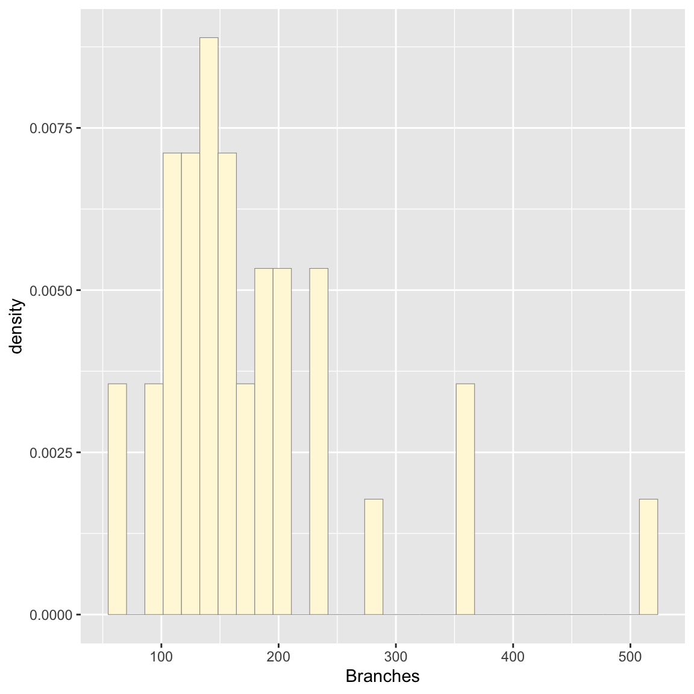

Homework #8
Testing probability densities with my data
Open libraries
##
## Attaching package: 'MASS'## The following object is masked from 'package:dplyr':
##
## selectThis data is taken from calculation of the total number of mitochondrial branches in an image of a cell. It is a relatively small dataset (36 entries).
Load in data:
z <- read.table("Mito_Branches.csv",header=TRUE,sep=",")
names(z) <- list("Branches") #naming the observations
str(z)## 'data.frame': 36 obs. of 1 variable:
## $ Branches: int 93 111 154 180 119 155 206 146 193 107 ...## Branches
## Min. : 61.0
## 1st Qu.:118.0
## Median :152.0
## Mean :174.6
## 3rd Qu.:202.8
## Max. :514.0Plot histogram of data
#plot histogram of the data
p1 <- ggplot(data=z, aes(x=Branches, y=..density..)) +
geom_histogram(color="grey60",fill="cornsilk",size=0.2) ## Warning: Using `size` aesthetic for lines was deprecated in ggplot2
## 3.4.0.
## ℹ Please use `linewidth` instead.
## This warning is displayed once every 8 hours.
## Call `lifecycle::last_lifecycle_warnings()` to see where this
## warning was generated.## Warning: The dot-dot notation (`..density..`) was deprecated in
## ggplot2 3.4.0.
## ℹ Please use `after_stat(density)` instead.
## This warning is displayed once every 8 hours.
## Call `lifecycle::last_lifecycle_warnings()` to see where this
## warning was generated.## `stat_bin()` using `bins = 30`. Pick better value with
## `binwidth`.
Add empirical density curve
# Adding density curve of the data (not fitted)
p1 <- p1 + geom_density(linetype="dotted",size=0.75)
print(p1)## `stat_bin()` using `bins = 30`. Pick better value with
## `binwidth`.
Get maximum likelihood parameters for normal
## mean sd
## 174.61111 87.40051
## ( 14.56675) ( 10.30025)## List of 5
## $ estimate: Named num [1:2] 174.6 87.4
## ..- attr(*, "names")= chr [1:2] "mean" "sd"
## $ sd : Named num [1:2] 14.6 10.3
## ..- attr(*, "names")= chr [1:2] "mean" "sd"
## $ vcov : num [1:2, 1:2] 212 0 0 106
## ..- attr(*, "dimnames")=List of 2
## .. ..$ : chr [1:2] "mean" "sd"
## .. ..$ : chr [1:2] "mean" "sd"
## $ n : int 36
## $ loglik : num -212
## - attr(*, "class")= chr "fitdistr"## mean
## 174.6111Plot normal probability density
meanML <- normPars$estimate["mean"] # pulling out the mean and sd from the fit
sdML <- normPars$estimate["sd"]
xval <- seq(0,max(z$Branches),len=length(z$Branches))
stat <- stat_function(aes(x = xval, y = ..y..), fun = dnorm, colour="red", n = length(z$Branches), args = list(mean = meanML, sd = sdML))
p1 + stat # adding the normal probability density to the plot## `stat_bin()` using `bins = 30`. Pick better value with
## `binwidth`.
Plot exponential probability density
expoPars <- fitdistr(z$Branches,"exponential")
rateML <- expoPars$estimate["rate"]
stat2 <- stat_function(aes(x = xval, y = ..y..), fun = dexp, colour="blue", n = length(z$Branches), args = list(rate=rateML))
p1 + stat + stat2## `stat_bin()` using `bins = 30`. Pick better value with
## `binwidth`.
Plot uniform probability density
stat3 <- stat_function(aes(x = xval, y = ..y..), fun = dunif, colour="darkgreen", n = length(z$Branches), args = list(min=min(z$Branches), max=max(z$Branches))) # uniform only needs the range of the data
p1 + stat + stat2 + stat3## `stat_bin()` using `bins = 30`. Pick better value with
## `binwidth`.
Plot gamma probability density
gammaPars <- fitdistr(z$Branches,"gamma")
shapeML <- gammaPars$estimate["shape"]
rateML <- gammaPars$estimate["rate"]
stat4 <- stat_function(aes(x = xval, y = ..y..), fun = dgamma, colour="brown", n = length(z$Branches), args = list(shape=shapeML, rate=rateML))
p1 + stat + stat2 + stat3 + stat4## `stat_bin()` using `bins = 30`. Pick better value with
## `binwidth`.
Plot beta probability density
pSpecial <- ggplot(data=z, aes(x=Branches/(max(Branches + 0.1)), y=..density..)) +
geom_histogram(color="grey60",fill="cornsilk",size=0.2) +
xlim(c(0,1)) +
geom_density(size=0.75,linetype="dotted")
betaPars <- fitdistr(x=z$Branches/max(z$Branches + 0.1),start=list(shape1=1,shape2=2),"beta")## Warning in densfun(x, parm[1], parm[2], ...): NaNs producedshape1ML <- betaPars$estimate["shape1"]
shape2ML <- betaPars$estimate["shape2"]
statSpecial <- stat_function(aes(x = xval, y = ..y..), fun = dbeta, colour="orchid", n = length(z$Branches), args = list(shape1=shape1ML,shape2=shape2ML))
pSpecial + statSpecial # beta needs a new graph## `stat_bin()` using `bins = 30`. Pick better value with
## `binwidth`.## Warning: Removed 2 rows containing missing values or values outside
## the scale range (`geom_bar()`).Looking at the graphs, the gamma distribution appears to fit the best (though not perfect- again this is a relatively small dataset)
Simulating a new dataset based on best distribution:
Simulating data and making a histogram, with the gamma probability density
# simulate new data
set.seed(37) # set seed so simulated data remains the same when run
my_sim_data <- rgamma(n=36,shape=shapeML,rate=rateML)
my_sim_data <- data.frame(1:36,my_sim_data)
names(my_sim_data) <- list("ID","Branches")
# make a histogram of the new data
p2 <- ggplot(data=my_sim_data, aes(x=Branches, y=..density..)) +
geom_histogram(color="grey60",fill="palegreen2",size=0.2)
# add gamma probability density to the graph
gstat <- stat_function(aes(x = xval, y = ..y..), fun = dgamma, colour="magenta1", n = length(my_sim_data$Branches), args = list(shape=shapeML, rate=rateML))
p2 + gstat ## `stat_bin()` using `bins = 30`. Pick better value with
## `binwidth`.Original data and gamma probability density:
p1 <- ggplot(data=z, aes(x=Branches, y=..density..)) +
geom_histogram(color="grey60",fill="cornsilk",size=0.2)
p1 + stat4## `stat_bin()` using `bins = 30`. Pick better value with
## `binwidth`.The simulated histogram is relatively similar to the real data, especially in that both have the majority of reads clumped between about 50 and 250, with a few reads appearing between 300-500. Obviously they are not identical, especially as this is a smaller dataset, but the overall shape of the histograms is pretty close. This is a good sign that the fit gamma distribution does represent the data relatively well.